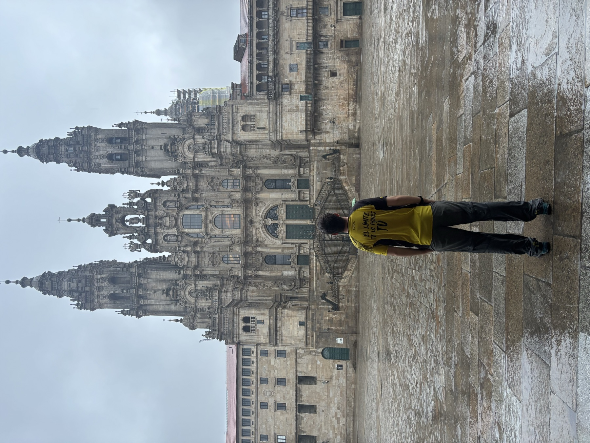

Junior Software Engineer @ NTT Data
Development of cloud-native microservices with Java and Spring Boot, business-process automation with Camunda BPMN, SQL databases, and deployment on Azure and Kubernetes within agile teams.
Seville, Spain · Open to opportunities in the Nordics
Software EngineerAI & HPC ResearcherData Engineer
I build at the intersection of scalable software engineering, High-Performance Computing and Artificial Intelligence applied to biomedicine — from cloud-native microservices in production to GPU-accelerated genomics on supercomputers.
Development of cloud-native microservices with Java and Spring Boot, business-process automation with Camunda BPMN, SQL databases, and deployment on Azure and Kubernetes within agile teams.
Universidad Pablo de Olavide
Research in Artificial Intelligence and High-Performance Computing on the CICA Hércules supercomputer (Slurm), spatial transcriptomics (TCGA-BRCA, 10x Xenium) and medical / histological image analysis — laying the groundwork for a PhD.
2026 — 2027
Máster Universitario en Ingeniería y Ciencia de Datos
Universidad Europea de Madrid
2021 — 2026
Grado en Ingeniería Informática
Universidad Pablo de Olavide
Bachelor’s Thesis · 10/10 With Honors
Accelerating AI algorithms in bioinformatics through HPC: extension of the Python library bioScience with parallel CPU / GPU implementations of the BiBit and BCCA biclustering algorithms.
2024 — 2025
LUT University · Lappeenranta, Finland 🇫🇮

Speaker PyConES 2026 · Barcelona
Beyond the Global Interpreter Lock: squeezing genomic algorithms with Numba, Cython and CUDA.
How to escape Python’s GIL to accelerate real bioinformatics workloads — biclustering on gene-expression matrices — moving from pure Python to JIT compilation, native extensions and GPU kernels, with reproducible benchmarks.
Slides & code on GitHubSince Nov 2026
Part of the Spanish Python community, supporting events, knowledge sharing and open-source culture.
2024 — 2026
Free Software Students’ Association, Universidad Pablo de Olavide
Organised the 9th and 10th editions of the Jornadas Ingenieros en la UPO and coordinated hands-on technical workshops.
Open-source platform for real-time motorsport telemetry and race strategy driven by Monte Carlo simulations.
Real-time financial data pipeline: event ingestion, stream processing and analytical storage.
Acceleration of biclustering algorithms for genomics with parallel CPU and GPU back-ends.
Processing of whole-slide histological images (WSI) and quantification in bone scintigraphy.
International mindset, resilience and discipline — the same traits that make long benchmarks and long distances worth it.

21.1km
Finished in Helsinki during my time in Finland.

~115km
On foot, stage after stage. Consistency beats intensity.
I enjoy strategy games and distance running: planning ahead, managing resources and pacing effort — the same way I approach engineering problems.